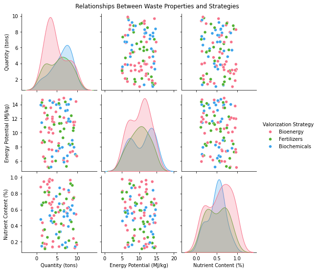
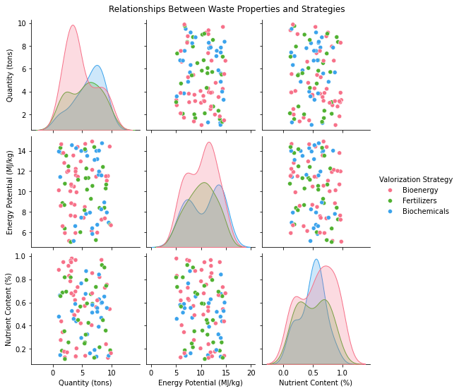

Lecture 10: Examples of use of AI in Bioeconomy#
Introduction#
The bioeconomy is an economic system that leverages biological resources and processes to create sustainable solutions for global challenges. Artificial Intelligence (AI) has emerged as a critical tool in the bioeconomy, driving efficiency, innovation, and sustainability across various sectors.
1. Agriculture#
Precision Farming#
AI-Driven Monitoring: Uses machine learning to analyze drone and satellite data for:
Crop health assessment
Early disease detection
Optimized irrigation scheduling
Yield Prediction: Predicts crop yields based on weather, soil, and historical data.
Weed and Pest Control: AI-powered robots identify and remove weeds or apply targeted pest control measures.
Practical Examples#
Drone Imagery for Crop Monitoring
Use drones equipped with multispectral cameras to capture images of a field. These images are processed with AI algorithms to assess plant health, detect diseases, and measure water stress.
Input: Multispectral images (visible and near-infrared wavelengths).
AI Application: Machine learning algorithms analyze color indices (e.g., NDVI - Normalized Difference Vegetation Index) to identify unhealthy plants.
Outcome: Farmers receive maps highlighting areas that need attention.
# Import necessary libraries
import numpy as np
import matplotlib.pyplot as plt
# Generate synthetic Red and NIR (Near-Infrared) bands
np.random.seed(42) # For reproducibility
red_band = np.random.uniform(0.1, 0.6, (100, 100)) # Simulating red reflectance
nir_band = np.random.uniform(0.2, 0.9, (100, 100)) # Simulating near-infrared reflectance
# Calculate NDVI
ndvi = (nir_band - red_band) / (nir_band + red_band)
# Visualize NDVI Map
plt.figure(figsize=(16, 16))
plt.imshow(ndvi, cmap='RdYlGn', interpolation='nearest')
plt.colorbar(label='NDVI')
plt.title('Simulated NDVI Map of a Field')
plt.xlabel('Field Width (pixels)')
plt.ylabel('Field Height (pixels)')
plt.show()

NDVI Map example: https://www.drought.gov/data-maps-tools/ndvi-greenness-maps https://www.pix4d.com/blog/pix4dmapper-optimizing-the-ROI-of-fungicides-with-NDVI/
AI-Driven Irrigation Management
Smart irrigation systems use AI to optimize water use by analyzing soil moisture, weather forecasts, and crop requirements.
Input: Real-time data from soil moisture sensors and weather APIs.
AI Application: Predictive models determine when and how much to irrigate.
Outcome: Reduces water wastage and prevents over-irrigation
# Import necessary libraries
import pandas as pd
import matplotlib.pyplot as plt
import numpy as np
# Generate synthetic soil moisture data and weather predictions
days = np.arange(1, 31) # Days of a month
soil_moisture = np.random.uniform(10, 40, size=len(days)) # Soil moisture levels in %
irrigation_threshold = 20 # Irrigation threshold in %
rain_prediction = np.random.choice([0, 1], size=len(days), p=[0.7, 0.3]) # 1 indicates rain
# Simulate irrigation decisions
irrigation = (soil_moisture < irrigation_threshold) & (rain_prediction == 0)
# Create DataFrame
data = pd.DataFrame({
"Day": days,
"Soil Moisture (%)": soil_moisture,
"Rain Prediction (1=Rain)": rain_prediction,
"Irrigation (1=Yes)": irrigation.astype(int)
})
# Plot Soil Moisture and Irrigation Events
plt.figure(figsize=(12, 6))
plt.plot(days, soil_moisture, label="Soil Moisture (%)", marker='o')
plt.axhline(irrigation_threshold, color='r', linestyle='--', label="Irrigation Threshold (%)")
plt.fill_between(days, 0, soil_moisture, where=irrigation, color='blue', alpha=0.3, label='Irrigation Event')
plt.scatter(days[rain_prediction == 1], soil_moisture[rain_prediction == 1], color='green', label="Rain Predicted", zorder=5)
plt.title('Soil Moisture and Irrigation Events')
plt.xlabel('Day of the Month')
plt.ylabel('Soil Moisture (%)')
plt.legend()
plt.grid()
plt.show()
# Display the data table
print(data.to_string(index=False))
Day Soil Moisture (%) Rain Prediction (1=Rain) Irrigation (1=Yes)
1 31.899949 1 0
2 15.535360 0 1
3 20.399191 1 0
4 29.898419 0 0
5 24.462680 0 0
6 32.157131 1 0
7 38.836237 0 0
8 13.496401 0 1
9 31.287031 1 0
10 16.910325 0 1
11 22.434302 0 0
12 10.985882 1 0
13 14.077221 1 0
14 19.593319 0 1
15 20.259574 0 0
16 36.987556 1 0
17 32.254387 0 0
18 39.165489 0 0
19 27.972145 0 0
20 17.251412 1 0
21 19.829651 0 1
22 19.595078 1 0
23 19.794830 0 1
24 30.188925 0 0
25 25.924238 1 0
26 21.562725 1 0
27 14.472693 0 1
28 10.664175 0 1
29 16.565040 1 0
30 13.224142 0 1
2. Food Systems#
Supply Chain Optimization#
Demand Forecasting: Reduces food waste by predicting consumption patterns.
Smart Logistics: Optimizes transportation routes to lower energy use and emissions.
Food Safety#
AI detects contaminants and defects in food production lines.
Models identify contamination sources in supply chains.
Alternative Proteins#
Accelerates development of lab-grown meat and plant-based proteins by simulating cellular growth and optimizing production.
Practical Examples#
Demand Forecasting - a time series problem where the goal is to predict the future demand for a particular product.
Input: past demand and exogenous variables
AI Application: time series prediction
Outcome: predicted demand to guide decision-making process
# Import necessary libraries
import pandas as pd
import numpy as np
import matplotlib.pyplot as plt
# Generate synthetic data for daily demand
np.random.seed(42)
days = pd.date_range(start="2025-01-01", periods=30, freq="D")
actual_demand = np.random.randint(50, 150, size=len(days)) # Actual demand
predicted_demand = actual_demand + np.random.normal(0, 10, size=len(days)) # Predicted with AI
# Create DataFrame
data = pd.DataFrame({
"Date": days,
"Actual Demand": actual_demand,
"Predicted Demand": predicted_demand
})
# Plot Actual vs Predicted Demand
plt.figure(figsize=(12, 6))
plt.plot(data["Date"], data["Actual Demand"], label="Actual Demand", marker="o", linestyle="-")
plt.plot(data["Date"], data["Predicted Demand"], label="Predicted Demand", marker="x", linestyle="--")
plt.fill_between(data["Date"], data["Actual Demand"], data["Predicted Demand"], alpha=0.2, color="gray", label="Error Margin")
plt.title("Demand Forecasting: Actual vs Predicted")
plt.xlabel("Date")
plt.ylabel("Demand (Units)")
plt.legend()
plt.grid()
plt.xticks(rotation=45)
plt.tight_layout()
plt.show()
# Display the data
print(data.to_string(index=False))

Date Actual Demand Predicted Demand
2025-01-01 101 76.608942
2025-01-02 142 148.034412
2025-01-03 64 61.489560
2025-01-04 121 119.361329
2025-01-05 110 95.236703
2025-01-06 70 84.869810
2025-01-07 132 131.755448
2025-01-08 136 139.555513
2025-01-09 124 128.170111
2025-01-10 124 132.324619
2025-01-11 137 134.066009
2025-01-12 149 148.701614
2025-01-13 73 73.951258
2025-01-14 52 58.646543
2025-01-15 71 69.597815
2025-01-16 102 101.668066
2025-01-17 51 43.509235
2025-01-18 137 129.216180
2025-01-19 79 88.488429
2025-01-20 87 102.808506
2025-01-21 51 47.318291
2025-01-22 113 116.755646
2025-01-23 109 97.068418
2025-01-24 70 65.909481
2025-01-25 82 77.532585
2025-01-26 125 140.242416
2025-01-27 107 110.229998
2025-01-28 71 57.065831
2025-01-29 138 116.216658
2025-01-30 98 87.561036
Route Optimization - a task where given a network of routes, the algorithm optimizes delivery routes to minimize the cost and the risk.
Input: Routes schedule and transportation network
AI task: optimization
import folium
# Define locations with their latitude and longitude
locations = {
"Factory": (37.7749, -122.4194), # San Francisco
"Warehouse 1": (37.8044, -122.2711), # Oakland
"Warehouse 2": (37.6879, -122.4702), # Daly City
"Retailer 1": (37.7749, -122.4892), # West San Francisco
"Retailer 2": (37.7328, -122.5054) # South San Francisco
}
# Define routes with distances (edges in the graph)
routes = [
("Factory", "Warehouse 1", 10),
("Factory", "Warehouse 2", 15),
("Warehouse 1", "Retailer 1", 8),
("Warehouse 1", "Retailer 2", 12),
("Warehouse 2", "Retailer 1", 10),
("Warehouse 2", "Retailer 2", 5)
]
# Define optimized route (e.g., AI-determined shortest path)
optimized_route = ["Factory", "Warehouse 2", "Retailer 2"]
# Initialize a folium map centered around the Factory
map_center = locations["Factory"]
supply_chain_map = folium.Map(location=map_center, zoom_start=12)
# Add all locations as markers
for location, coords in locations.items():
folium.Marker(
location=coords,
popup=f"<b>{location}</b>",
tooltip=location
).add_to(supply_chain_map)
# Draw all routes
for start, end, distance in routes:
folium.PolyLine(
[locations[start], locations[end]],
color="gray",
weight=2,
tooltip=f"{start} to {end}: {distance} km"
).add_to(supply_chain_map)
# Highlight the optimized route
for i in range(len(optimized_route) - 1):
folium.PolyLine(
[locations[optimized_route[i]], locations[optimized_route[i + 1]]],
color="red",
weight=4,
tooltip=f"Optimized: {optimized_route[i]} to {optimized_route[i + 1]}"
).add_to(supply_chain_map)
# Display the map
supply_chain_map.save("route_optimization_map.html")
supply_chain_map
3. Forestry#
Sustainable Forest Management#
AI predicts forest growth and monitors illegal logging using satellite data.
Optimizes timber harvesting while maintaining biodiversity.
Practical examples#
For example, the task might be to predict:
Forest growth for harvesting optimization
Identify illegal logging locations
import folium
import numpy as np
from folium.plugins import HeatMap
# Define map center (example location: Amazon rainforest region)
map_center = [-3.4653, -62.2159] # Latitude and Longitude of the Amazon region
forest_map = folium.Map(location=map_center, zoom_start=6)
# Generate synthetic forest growth data (random points with intensity values)
forest_growth_data = [
[-3.5 + np.random.uniform(-0.5, 0.5), -62.2 + np.random.uniform(-0.5, 0.5), np.random.uniform(0.5, 1.0)]
for _ in range(100)
]
# Add a heatmap layer for forest growth prediction
HeatMap(forest_growth_data, radius=15, blur=10, max_zoom=8, name="Forest Growth Prediction").add_to(forest_map)
# Add markers for illegal logging detections
illegal_logging_sites = [
{"location": [-3.2, -62.1], "severity": "High"},
{"location": [-3.6, -62.4], "severity": "Medium"},
{"location": [-3.4, -62.3], "severity": "Low"}
]
for site in illegal_logging_sites:
color = "red" if site["severity"] == "High" else "orange" if site["severity"] == "Medium" else "yellow"
folium.Marker(
location=site["location"],
popup=f"Illegal Logging: {site['severity']} Severity",
icon=folium.Icon(color=color, icon="tree")
).add_to(forest_map)
# Add polygons for optimized timber harvesting zones
optimized_harvest_zones = [
[[-3.3, -62.5], [-3.3, -62.3], [-3.5, -62.3], [-3.5, -62.5]], # Zone 1
[[-3.6, -62.2], [-3.6, -62.0], [-3.8, -62.0], [-3.8, -62.2]] # Zone 2
]
for zone in optimized_harvest_zones:
folium.Polygon(
locations=zone,
color="green",
fill=True,
fill_color="green",
fill_opacity=0.3,
popup="Optimized Harvest Zone"
).add_to(forest_map)
# Add layer controls
folium.LayerControl().add_to(forest_map)
# Save and display the map
forest_map.save("sustainable_forest_management.html")
forest_map
C:\Users\kamil\AppData\Local\Temp\ipykernel_12524\4157862255.py:30: UserWarning: color argument of Icon should be one of: {'lightgreen', 'green', 'purple', 'beige', 'lightred', 'darkgreen', 'gray', 'blue', 'darkpurple', 'darkred', 'black', 'lightblue', 'cadetblue', 'darkblue', 'orange', 'pink', 'white', 'lightgray', 'red'}.
icon=folium.Icon(color=color, icon="tree")
4. Energy and Biofuels#
Biofuel Production Optimization#
AI improves microbial fermentation for higher biofuel yields.
Predictive models reduce experimentation time for biofuel performance testing.
Energy Efficiency#
AI forecasts energy demands and integrates bioenergy production with grid systems.
import numpy as np
import pandas as pd
import matplotlib.pyplot as plt
# Generate synthetic data for microbial fermentation
np.random.seed(42)
experiments = np.arange(1, 21) # 20 fermentation experiments
temperature = np.random.uniform(30, 40, size=len(experiments)) # Temperature in degrees Celsius
pH = np.random.uniform(5, 7, size=len(experiments)) # pH levels
yield_percentage = 80 + 0.5 * (temperature - 35) - 0.2 * (pH - 6)**2 + np.random.normal(0, 2, size=len(experiments)) # Simulated yield
# Combine into a DataFrame
data = pd.DataFrame({
"Experiment": experiments,
"Temperature (°C)": temperature,
"pH": pH,
"Biofuel Yield (%)": yield_percentage
})
# Visualize the optimization process
plt.figure(figsize=(12, 6))
plt.scatter(data["Temperature (°C)"], data["Biofuel Yield (%)"], c="blue", label="Temperature Effect", alpha=0.7)
plt.scatter(data["pH"], data["Biofuel Yield (%)"], c="green", label="pH Effect", alpha=0.7)
plt.title("Biofuel Production Optimization")
plt.xlabel("Parameter Values (Temperature / pH)")
plt.ylabel("Biofuel Yield (%)")
plt.legend()
plt.grid()
plt.show()
# Display the data table
print(data.to_string(index=False))

Experiment Temperature (°C) pH Biofuel Yield (%)
1 33.745401 6.223706 79.335697
2 39.507143 5.278988 80.034178
3 37.319939 5.584289 82.770496
4 35.986585 5.732724 78.037318
5 31.560186 5.912140 78.696277
6 31.559945 6.570352 74.295572
7 30.580836 5.399348 75.061889
8 38.661761 6.028469 82.224441
9 36.011150 6.184829 81.975676
10 37.080726 5.092901 81.218534
11 30.205845 6.215090 77.362373
12 39.699099 5.341048 81.660498
13 38.324426 5.130103 78.553825
14 32.123391 6.897771 76.960809
15 31.818250 6.931264 77.314397
16 31.834045 6.616795 80.455180
17 33.042422 5.609228 79.677907
18 35.247564 5.195344 76.468208
19 34.319450 6.368466 80.280740
20 32.912291 5.880305 78.183116
# Generate synthetic data for energy demand and bioenergy production
time = pd.date_range(start="2025-01-01", periods=48, freq="H") # 48 hours of data
energy_demand = 50 + 10 * np.sin(np.linspace(0, 2 * np.pi, len(time))) + np.random.normal(0, 2, len(time)) # kWh
bioenergy_production = 20 + 5 * np.cos(np.linspace(0, 2 * np.pi, len(time))) # kWh
grid_energy = energy_demand - bioenergy_production # Energy required from the grid
# Combine into a DataFrame
energy_data = pd.DataFrame({
"Time": time,
"Energy Demand (kWh)": energy_demand,
"Bioenergy Production (kWh)": bioenergy_production,
"Grid Energy (kWh)": grid_energy
})
# Visualize energy demand and bioenergy integration
plt.figure(figsize=(12, 6))
plt.plot(energy_data["Time"], energy_data["Energy Demand (kWh)"], label="Energy Demand", color="blue")
plt.plot(energy_data["Time"], energy_data["Bioenergy Production (kWh)"], label="Bioenergy Production", color="green")
plt.plot(energy_data["Time"], energy_data["Grid Energy (kWh)"], label="Grid Energy", color="red", linestyle="--")
plt.title("Energy Demand and Bioenergy Integration")
plt.xlabel("Time")
plt.ylabel("Energy (kWh)")
plt.legend()
plt.grid()
plt.xticks(rotation=45)
plt.tight_layout()
plt.show()
# Display the data table
print(energy_data.head().to_string(index=False))

Time Energy Demand (kWh) Bioenergy Production (kWh) Grid Energy (kWh)
2025-01-01 00:00:00 48.646156 25.000000 23.646156
2025-01-01 01:00:00 52.556222 24.955387 27.600835
2025-01-01 02:00:00 54.703953 24.822346 29.881607
2025-01-01 03:00:00 55.766453 24.603249 31.163204
2025-01-01 04:00:00 53.417731 24.302008 29.115723
5. Fisheries and Aquaculture#
Smart Aquaculture#
AI monitors water quality, fish health, and feeding schedules.
Detects early signs of disease in fish populations using image recognition.
# Import necessary libraries
import pandas as pd
import numpy as np
import matplotlib.pyplot as plt
# Simulate time-series data for 48 hours
time = pd.date_range(start="2025-01-01", periods=48, freq="H")
# Generate synthetic water quality parameters
temperature = np.random.uniform(20, 30, size=len(time)) # Temperature in °C
pH = np.random.uniform(6.5, 8.5, size=len(time)) # pH levels
oxygen_levels = np.random.uniform(5, 10, size=len(time)) # Oxygen levels in mg/L
# Feeding schedule (e.g., feeding events at specific intervals)
feeding_schedule = [(i % 12 == 0) for i in range(len(time))] # Feeding every 12 hours
# Combine into a DataFrame
aquaculture_data = pd.DataFrame({
"Time": time,
"Temperature (°C)": temperature,
"pH": pH,
"Oxygen Levels (mg/L)": oxygen_levels,
"Feeding Event": feeding_schedule
})
# Plot water quality parameters and feeding events
plt.figure(figsize=(12, 6))
plt.plot(aquaculture_data["Time"], aquaculture_data["Temperature (°C)"], label="Temperature (°C)", color="red")
plt.plot(aquaculture_data["Time"], aquaculture_data["pH"], label="pH Levels", color="blue")
plt.plot(aquaculture_data["Time"], aquaculture_data["Oxygen Levels (mg/L)"], label="Oxygen Levels (mg/L)", color="green")
plt.scatter(aquaculture_data["Time"][feeding_schedule], [20] * sum(feeding_schedule), color="orange", label="Feeding Events", zorder=5)
plt.title("Water Quality Monitoring and Feeding Schedule")
plt.xlabel("Time")
plt.ylabel("Values")
plt.legend()
plt.grid()
plt.xticks(rotation=45)
plt.tight_layout()
plt.show()
# Display the first few rows of the data
print(aquaculture_data.head().to_string(index=False))
Time Temperature (°C) pH Oxygen Levels (mg/L) Feeding Event
2025-01-01 00:00:00 24.174110 8.373460 9.865053 True
2025-01-01 01:00:00 22.221078 6.775042 6.965489 False
2025-01-01 02:00:00 21.198654 7.182133 9.460233 False
2025-01-01 03:00:00 23.376152 6.726947 8.155693 False
2025-01-01 04:00:00 29.429097 8.349387 8.974057 False
# Import necessary libraries
from sklearn.metrics import confusion_matrix, classification_report
import matplotlib.pyplot as plt
# Simulate a dataset for fish health detection
np.random.seed(42)
true_labels = np.random.choice(["Healthy", "Diseased"], size=100, p=[0.8, 0.2])
predicted_labels = np.random.choice(["Healthy", "Diseased"], size=100, p=[0.85, 0.15])
# Generate a confusion matrix
conf_matrix = confusion_matrix(true_labels, predicted_labels, labels=["Healthy", "Diseased"])
labels = ["Healthy", "Diseased"]
# Plot the confusion matrix
plt.figure(figsize=(6, 5))
plt.imshow(conf_matrix, interpolation="nearest", cmap=plt.cm.Blues)
plt.title("Fish Health Detection: Confusion Matrix")
plt.colorbar()
tick_marks = np.arange(len(labels))
plt.xticks(tick_marks, labels, rotation=45)
plt.yticks(tick_marks, labels)
# Add text annotations
for i in range(len(labels)):
for j in range(len(labels)):
plt.text(j, i, conf_matrix[i, j], ha="center", va="center", color="black")
plt.xlabel("Predicted Labels")
plt.ylabel("True Labels")
plt.tight_layout()
plt.show()
# Display a classification report
report = classification_report(true_labels, predicted_labels, target_names=labels)
print("Classification Report:\n", report)

Classification Report:
precision recall f1-score support
Healthy 0.17 0.17 0.17 18
Diseased 0.82 0.82 0.82 82
accuracy 0.70 100
macro avg 0.49 0.49 0.49 100
weighted avg 0.70 0.70 0.70 100
6. Biomaterials and Biomanufacturing#
Material Discovery#
Accelerates discovery of sustainable biomaterials like bioplastics.
Simulates and predicts the performance of bio-based composites.
Process Optimization#
AI enhances efficiency in biomanufacturing processes, such as optimizing enzymes and microbial pathways.
# Import necessary libraries
import pandas as pd
import numpy as np
import matplotlib.pyplot as plt
# Simulate material properties
np.random.seed(42)
num_samples = 100
materials = [f"Material_{i}" for i in range(1, num_samples + 1)]
density = np.random.uniform(0.8, 1.5, num_samples) # g/cm^3
tensile_strength = np.random.uniform(20, 100, num_samples) # MPa
flexibility = np.random.uniform(0.1, 0.9, num_samples) # Ratio
biodegradability = np.random.uniform(0.5, 1.0, num_samples) # Ratio
# Simulate a composite "Performance Score"
performance_score = (
0.4 * tensile_strength + 0.3 * biodegradability + 0.2 * flexibility - 0.1 * density
)
performance_score = (performance_score - performance_score.min()) / (
performance_score.max() - performance_score.min()
) # Normalize to 0-1 scale
# Combine into a DataFrame
material_data = pd.DataFrame({
"Material": materials,
"Density (g/cm^3)": density,
"Tensile Strength (MPa)": tensile_strength,
"Flexibility": flexibility,
"Biodegradability": biodegradability,
"Performance Score": performance_score,
})
# Display the first few rows
print("Sample data:")
print(material_data.head())
Sample data:
Material Density (g/cm^3) Tensile Strength (MPa) Flexibility \
0 Material_1 1.062178 22.514335 0.613625
1 Material_2 1.465500 70.912833 0.167312
2 Material_3 1.312396 45.148478 0.229303
3 Material_4 1.219061 60.685655 0.818843
4 Material_5 0.909213 92.605318 0.585143
Biodegradability Performance Score
0 0.525841 0.022579
1 0.765677 0.642218
2 0.770318 0.312310
3 0.818715 0.516375
4 0.863046 0.926179
# Pairwise scatter plots to analyze material properties
pd.plotting.scatter_matrix(
material_data[["Density (g/cm^3)", "Tensile Strength (MPa)", "Flexibility", "Biodegradability", "Performance Score"]],
figsize=(12, 8),
alpha=0.7,
diagonal="hist",
color="blue",
)
plt.suptitle("Relationships Between Material Properties", y=1.02)
plt.show()
# Top materials based on performance
top_materials = material_data.sort_values(by="Performance Score", ascending=False).head(10)
plt.figure(figsize=(10, 6))
plt.barh(top_materials["Material"], top_materials["Performance Score"], color="green")
plt.xlabel("Performance Score")
plt.ylabel("Material")
plt.title("Top 10 Materials by Performance Score")
plt.gca().invert_yaxis()
plt.show()

from sklearn.model_selection import train_test_split
from sklearn.ensemble import RandomForestRegressor
from sklearn.metrics import mean_squared_error, r2_score
# Prepare features and target
X = material_data[["Density (g/cm^3)", "Tensile Strength (MPa)", "Flexibility", "Biodegradability"]]
y = material_data["Performance Score"]
# Split into train and test sets
X_train, X_test, y_train, y_test = train_test_split(X, y, test_size=0.2, random_state=42)
# Train a Random Forest model
model = RandomForestRegressor(n_estimators=100, random_state=42)
model.fit(X_train, y_train)
# Make predictions
y_pred = model.predict(X_test)
# Evaluate the model
mse = mean_squared_error(y_test, y_pred)
r2 = r2_score(y_test, y_pred)
print(f"Mean Squared Error: {mse:.4f}")
print(f"R-squared Score: {r2:.4f}")
# Plot actual vs predicted performance scores
plt.figure(figsize=(8, 6))
plt.scatter(y_test, y_pred, alpha=0.7, color="blue")
plt.plot([y_test.min(), y_test.max()], [y_test.min(), y_test.max()], "k--", lw=2, color="red")
plt.title("Actual vs Predicted Performance Scores")
plt.xlabel("Actual Performance Score")
plt.ylabel("Predicted Performance Score")
plt.grid()
plt.show()
Mean Squared Error: 0.0001
R-squared Score: 0.9987
C:\Users\kamil\AppData\Local\Temp\ipykernel_12524\1379572060.py:28: UserWarning: color is redundantly defined by the 'color' keyword argument and the fmt string "k--" (-> color='k'). The keyword argument will take precedence.
plt.plot([y_test.min(), y_test.max()], [y_test.min(), y_test.max()], "k--", lw=2, color="red")

7. Circular Bioeconomy#
Waste Valorization#
AI optimizes the conversion of agricultural and organic waste into bioenergy, biochemicals, and fertilizers.
Predicts the best reuse and recycling strategies for bio-based products.
# Import necessary libraries
import pandas as pd
import numpy as np
# Simulate waste data
np.random.seed(42)
num_samples = 100
waste_type = np.random.choice(["Agricultural", "Organic", "Industrial"], num_samples)
waste_quantity = np.random.uniform(1, 10, num_samples) # in tons
energy_potential = np.random.uniform(5, 15, num_samples) # in MJ/kg
nutrient_content = np.random.uniform(0.1, 1.0, num_samples) # in %
degradation_rate = np.random.uniform(0.05, 0.5, num_samples) # in fraction
# Simulate valorization strategy labels
strategies = ["Bioenergy", "Biochemicals", "Fertilizers"]
valorization_strategy = np.random.choice(strategies, num_samples)
# Combine into a DataFrame
waste_data = pd.DataFrame({
"Waste Type": waste_type,
"Quantity (tons)": waste_quantity,
"Energy Potential (MJ/kg)": energy_potential,
"Nutrient Content (%)": nutrient_content,
"Degradation Rate": degradation_rate,
"Valorization Strategy": valorization_strategy,
})
# Display first few rows
print("Sample waste data:")
print(waste_data.head())
Sample waste data:
Waste Type Quantity (tons) Energy Potential (MJ/kg) \
0 Industrial 2.788441 5.165878
1 Agricultural 1.049699 10.120931
2 Industrial 8.339153 7.264958
3 Industrial 7.361716 11.451728
4 Agricultural 7.561065 6.743664
Nutrient Content (%) Degradation Rate Valorization Strategy
0 0.829102 0.058200 Bioenergy
1 0.880365 0.092499 Bioenergy
2 0.921916 0.357353 Fertilizers
3 0.560208 0.082035 Bioenergy
4 0.551365 0.193539 Biochemicals
import seaborn as sns
import matplotlib.pyplot as plt
# Count plot for waste type
plt.figure(figsize=(6, 4))
sns.countplot(data=waste_data, x="Waste Type", palette="coolwarm")
plt.title("Distribution of Waste Types")
plt.show()
# Boxplot for waste properties grouped by valorization strategy
plt.figure(figsize=(10, 6))
sns.boxplot(data=waste_data, x="Valorization Strategy", y="Energy Potential (MJ/kg)", palette="Set2")
plt.title("Energy Potential by Valorization Strategy")
plt.show()
# Pairplot for numeric features
sns.pairplot(waste_data, hue="Valorization Strategy", vars=["Quantity (tons)", "Energy Potential (MJ/kg)", "Nutrient Content (%)"], palette="husl")
plt.suptitle("Relationships Between Waste Properties and Strategies", y=1.02)
plt.show()
C:\Users\kamil\AppData\Local\Temp\ipykernel_12524\984286448.py:6: FutureWarning:
Passing `palette` without assigning `hue` is deprecated and will be removed in v0.14.0. Assign the `x` variable to `hue` and set `legend=False` for the same effect.
sns.countplot(data=waste_data, x="Waste Type", palette="coolwarm")
C:\Users\kamil\AppData\Local\Temp\ipykernel_12524\984286448.py:12: FutureWarning:
Passing `palette` without assigning `hue` is deprecated and will be removed in v0.14.0. Assign the `x` variable to `hue` and set `legend=False` for the same effect.
sns.boxplot(data=waste_data, x="Valorization Strategy", y="Energy Potential (MJ/kg)", palette="Set2")
 

from sklearn.model_selection import train_test_split
from sklearn.ensemble import RandomForestClassifier
from sklearn.metrics import classification_report, confusion_matrix
# Encode categorical labels
waste_data_encoded = pd.get_dummies(waste_data, columns=["Waste Type"], drop_first=True)
X = waste_data_encoded[["Quantity (tons)", "Energy Potential (MJ/kg)", "Nutrient Content (%)", "Degradation Rate"] + [col for col in waste_data_encoded.columns if "Waste Type" in col]]
y = waste_data["Valorization Strategy"]
# Train-test split
X_train, X_test, y_train, y_test = train_test_split(X, y, test_size=0.2, random_state=42)
# Train the model
model = RandomForestClassifier(n_estimators=100, random_state=42)
model.fit(X_train, y_train)
# Make predictions
y_pred = model.predict(X_test)
# Evaluate the model
print("Classification Report:")
print(classification_report(y_test, y_pred))
# Confusion matrix
conf_matrix = confusion_matrix(y_test, y_pred, labels=strategies)
sns.heatmap(conf_matrix, annot=True, fmt="d", cmap="Blues", xticklabels=strategies, yticklabels=strategies)
plt.title("Confusion Matrix for Valorization Strategy Prediction")
plt.xlabel("Predicted")
plt.ylabel("True")
plt.show()
Classification Report:
precision recall f1-score support
Biochemicals 0.29 0.33 0.31 6
Bioenergy 0.50 0.25 0.33 12
Fertilizers 0.14 0.50 0.22 2
accuracy 0.30 20
macro avg 0.31 0.36 0.29 20
weighted avg 0.40 0.30 0.31 20
# Feature importance visualization
importances = model.feature_importances_
feature_names = X.columns
plt.figure(figsize=(10, 6))
plt.barh(feature_names, importances, color="skyblue")
plt.title("Feature Importance for Valorization Strategy Prediction")
plt.xlabel("Importance Score")
plt.ylabel("Features")
plt.gca().invert_yaxis()
plt.grid()
plt.show()
Real-life example on actual data#
Let’s do some real application using real-life data.
UCI Machine Learning Repository: Contains water quality datasets for rivers, lakes, and oceans.
# Import necessary libraries
import pandas as pd
import matplotlib.pyplot as plt
# Load the UCI Water Quality dataset (example dataset: water-treatment.csv)
url = "https://archive.ics.uci.edu/ml/machine-learning-databases/water-treatment/water-treatment.data"
column_names = ["Date", "Flow", "pH", "Oxygen", "Temperature", "Conductivity"]
water_data = pd.read_csv(url, header=None, names=column_names, sep=",", na_values="?")
# Select relevant columns and clean data
water_data = water_data[["Date", "pH", "Oxygen", "Temperature"]].dropna()
# Convert dates if needed
water_data["Date"] = pd.to_datetime(water_data["Date"], errors="coerce")
# Plot the water quality parameters
plt.figure(figsize=(12, 6))
plt.scatter(water_data["Date"], water_data["pH"], label="pH", color="blue")
plt.scatter(water_data["Date"], water_data["Oxygen"], label="Dissolved Oxygen", color="green")
plt.scatter(water_data["Date"], water_data["Temperature"], label="Temperature (°C)", color="red")
plt.title("Water Quality Monitoring")
plt.xlabel("Date")
plt.ylabel("Parameter Values")
plt.legend()
plt.grid()
plt.xticks(rotation=45)
plt.tight_layout()
plt.show()
# Import necessary libraries
import pandas as pd
import numpy as np
# Load the dataset
url = "https://archive.ics.uci.edu/ml/machine-learning-databases/water-treatment/water-treatment.data"
column_names = [
"Date", "Flow", "pH", "Oxygen", "Temperature", "Conductivity",
"Nitrate", "BOD", "COD", "Total Nitrogen", "Total Phosphorus", "Suspended Solids"
]
water_data = pd.read_csv(url, header=None, names=column_names, sep=",", na_values="?")
# Select relevant columns and clean data
water_data = water_data[["Flow", "pH", "Oxygen", "Temperature", "Conductivity"]].dropna()
# Display first few rows
print("Sample data:")
print(water_data.head())
Sample data:
Flow \
D-5/3/90 35023.0 3.5 7.9 205.0 588.0 192.0 65.6 4.5 2430 7.8 236.0 268 73.1 8.5 2280 7.8 158.0 376.0 96.0 77.1 0.4 2060 7.6 20.0 104.0 20.0 0.00
D-11/3/90 29156.0 2.5 7.7 206.0 451.0 194.0 69.1 4.5 1249 7.7 206.0 220 61.8 4.0 1219 7.7 111.0 282.0 124.0 77.4 0.3 1233 7.5 16.0 118.0 19.0 0.03
D-12/3/90 39246.0 2.0 7.8 172.0 506.0 200.0 69.0 5.0 1865 7.8 208.0 248 66.1 6.5 1929 7.8 164.0 463.0 100.0 78.0 0.6 1825 7.6 19.0 157.0 27.0 0.02
D-13/3/90 42393.0 0.7 7.9 189.0 478.0 230.0 67.0 5.5 1410 8.1 173.0 192 62.5 5.0 1406 7.7 172.0 412.0 104.0 71.2 0.4 1562 7.6 152.0 306.0 131.0 3.50
D-14/3/90 42857.0 1.5 7.7 238.0 319.0 292.0 33.8 3.5 1261 7.6 170.0 268 31.3 4.2 1204 7.6 116.0 276.0 104.0 51.9 0.3 1261 7.4 320.0 350.0 238.0 2.00
pH \
D-5/3/90 35023.0 3.5 7.9 205.0 588.0 192.0 65.6 4.5 2430 7.8 236.0 268 73.1 8.5 2280 7.8 158.0 376.0 96.0 77.1 0.4 2060 7.6 20.0 104.0 20.0 1840.0
D-11/3/90 29156.0 2.5 7.7 206.0 451.0 194.0 69.1 4.5 1249 7.7 206.0 220 61.8 4.0 1219 7.7 111.0 282.0 124.0 77.4 0.3 1233 7.5 16.0 118.0 19.0 1338.0
D-12/3/90 39246.0 2.0 7.8 172.0 506.0 200.0 69.0 5.0 1865 7.8 208.0 248 66.1 6.5 1929 7.8 164.0 463.0 100.0 78.0 0.6 1825 7.6 19.0 157.0 27.0 1616.0
D-13/3/90 42393.0 0.7 7.9 189.0 478.0 230.0 67.0 5.5 1410 8.1 173.0 192 62.5 5.0 1406 7.7 172.0 412.0 104.0 71.2 0.4 1562 7.6 152.0 306.0 131.0 1575.0
D-14/3/90 42857.0 1.5 7.7 238.0 319.0 292.0 33.8 3.5 1261 7.6 170.0 268 31.3 4.2 1204 7.6 116.0 276.0 104.0 51.9 0.3 1261 7.4 320.0 350.0 238.0 1304.0
Oxygen \
D-5/3/90 35023.0 3.5 7.9 205.0 588.0 192.0 65.6 4.5 2430 7.8 236.0 268 73.1 8.5 2280 7.8 158.0 376.0 96.0 77.1 0.4 2060 7.6 20.0 104.0 20.0 33.1
D-11/3/90 29156.0 2.5 7.7 206.0 451.0 194.0 69.1 4.5 1249 7.7 206.0 220 61.8 4.0 1219 7.7 111.0 282.0 124.0 77.4 0.3 1233 7.5 16.0 118.0 19.0 46.1
D-12/3/90 39246.0 2.0 7.8 172.0 506.0 200.0 69.0 5.0 1865 7.8 208.0 248 66.1 6.5 1929 7.8 164.0 463.0 100.0 78.0 0.6 1825 7.6 19.0 157.0 27.0 21.2
D-13/3/90 42393.0 0.7 7.9 189.0 478.0 230.0 67.0 5.5 1410 8.1 173.0 192 62.5 5.0 1406 7.7 172.0 412.0 104.0 71.2 0.4 1562 7.6 152.0 306.0 131.0 0.6
D-14/3/90 42857.0 1.5 7.7 238.0 319.0 292.0 33.8 3.5 1261 7.6 170.0 268 31.3 4.2 1204 7.6 116.0 276.0 104.0 51.9 0.3 1261 7.4 320.0 350.0 238.0 31.8
Temperature \
D-5/3/90 35023.0 3.5 7.9 205.0 588.0 192.0 65.6 4.5 2430 7.8 236.0 268 73.1 8.5 2280 7.8 158.0 376.0 96.0 77.1 0.4 2060 7.6 20.0 104.0 20.0 64.2
D-11/3/90 29156.0 2.5 7.7 206.0 451.0 194.0 69.1 4.5 1249 7.7 206.0 220 61.8 4.0 1219 7.7 111.0 282.0 124.0 77.4 0.3 1233 7.5 16.0 118.0 19.0 43.6
D-12/3/90 39246.0 2.0 7.8 172.0 506.0 200.0 69.0 5.0 1865 7.8 208.0 248 66.1 6.5 1929 7.8 164.0 463.0 100.0 78.0 0.6 1825 7.6 19.0 157.0 27.0 59.7
D-13/3/90 42393.0 0.7 7.9 189.0 478.0 230.0 67.0 5.5 1410 8.1 173.0 192 62.5 5.0 1406 7.7 172.0 412.0 104.0 71.2 0.4 1562 7.6 152.0 306.0 131.0 45.8
D-14/3/90 42857.0 1.5 7.7 238.0 319.0 292.0 33.8 3.5 1261 7.6 170.0 268 31.3 4.2 1204 7.6 116.0 276.0 104.0 51.9 0.3 1261 7.4 320.0 350.0 238.0 61.2
Conductivity
D-5/3/90 35023.0 3.5 7.9 205.0 588.0 192.0 65.6 4.5 2430 7.8 236.0 268 73.1 8.5 2280 7.8 158.0 376.0 96.0 77.1 0.4 2060 7.6 20.0 104.0 20.0 95.3
D-11/3/90 29156.0 2.5 7.7 206.0 451.0 194.0 69.1 4.5 1249 7.7 206.0 220 61.8 4.0 1219 7.7 111.0 282.0 124.0 77.4 0.3 1233 7.5 16.0 118.0 19.0 92.5
D-12/3/90 39246.0 2.0 7.8 172.0 506.0 200.0 69.0 5.0 1865 7.8 208.0 248 66.1 6.5 1929 7.8 164.0 463.0 100.0 78.0 0.6 1825 7.6 19.0 157.0 27.0 90.8
D-13/3/90 42393.0 0.7 7.9 189.0 478.0 230.0 67.0 5.5 1410 8.1 173.0 192 62.5 5.0 1406 7.7 172.0 412.0 104.0 71.2 0.4 1562 7.6 152.0 306.0 131.0 92.0
D-14/3/90 42857.0 1.5 7.7 238.0 319.0 292.0 33.8 3.5 1261 7.6 170.0 268 31.3 4.2 1204 7.6 116.0 276.0 104.0 51.9 0.3 1261 7.4 320.0 350.0 238.0 92.9
import matplotlib.pyplot as plt
# Pairwise scatter plot to visualize relationships
pd.plotting.scatter_matrix(water_data, figsize=(12, 8), alpha=0.7)
plt.suptitle("Pairwise Relationships Between Water Quality Parameters")
plt.show()
# Plot parameter distributions
water_data.hist(figsize=(12, 8), bins=15, color='skyblue', edgecolor='black')
plt.suptitle("Distribution of Water Quality Parameters")
plt.show()


from sklearn.model_selection import train_test_split
from sklearn.ensemble import RandomForestRegressor
from sklearn.metrics import mean_squared_error, r2_score
# Split the dataset into features and target variable
X = water_data[["Temperature", "pH", "Conductivity"]]
y = water_data["Oxygen"]
# Train-test split
X_train, X_test, y_train, y_test = train_test_split(X, y, test_size=0.2, random_state=42)
# Train the model
model = RandomForestRegressor(n_estimators=1000, random_state=42)
model.fit(X_train, y_train)
# Make predictions
y_pred = model.predict(X_test)
# Evaluate the model
mse = mean_squared_error(y_test, y_pred)
r2 = r2_score(y_test, y_pred)
print(f"Mean Squared Error: {mse:.2f}")
print(f"R-squared Score: {r2:.2f}")
Mean Squared Error: 208.28
R-squared Score: -0.01
# Scatter plot of actual vs. predicted oxygen levels
plt.figure(figsize=(8, 6))
plt.scatter(y_test, y_pred, alpha=0.7, color="blue")
plt.plot([y_test.min(), y_test.max()], [y_test.min(), y_test.max()], "k--", lw=2, color="red")
plt.title("Actual vs. Predicted Oxygen Levels")
plt.xlabel("Actual Oxygen Levels")
plt.ylabel("Predicted Oxygen Levels")
plt.grid()
plt.show()
C:\Users\kamil\AppData\Local\Temp\ipykernel_12524\3845146598.py:4: UserWarning: color is redundantly defined by the 'color' keyword argument and the fmt string "k--" (-> color='k'). The keyword argument will take precedence.
plt.plot([y_test.min(), y_test.max()], [y_test.min(), y_test.max()], "k--", lw=2, color="red")

Abnormal Oxygen levels in the water
Let’s get another dataset where we will try to detect abnormal levels of oxygen in a water treatment plant
# Import necessary libraries
import pandas as pd
import numpy as np
# Load the dataset
url = "https://archive.ics.uci.edu/ml/machine-learning-databases/water-treatment/water-treatment.data"
column_names = [
"Date", "Flow", "pH", "Oxygen", "Temperature", "Conductivity",
"Nitrate", "BOD", "COD", "Total Nitrogen", "Total Phosphorus", "Suspended Solids"
]
water_data = pd.read_csv(url, header=None, names=column_names, sep=",", na_values="?")
# Select relevant columns and clean data
water_data = water_data[["Flow", "pH", "Oxygen", "Temperature", "Conductivity"]].dropna()
# Create a binary target variable: 'Normal' if oxygen >= 6, 'Abnormal' otherwise
oxygen_threshold = 6
water_data["Oxygen_Status"] = np.where(water_data["Oxygen"] >= oxygen_threshold, "Normal", "Abnormal")
# Display the first few rows
print("Sample data with Oxygen Status:")
print(water_data.head())
Sample data with Oxygen Status:
Flow \
D-5/3/90 35023.0 3.5 7.9 205.0 588.0 192.0 65.6 4.5 2430 7.8 236.0 268 73.1 8.5 2280 7.8 158.0 376.0 96.0 77.1 0.4 2060 7.6 20.0 104.0 20.0 0.00
D-11/3/90 29156.0 2.5 7.7 206.0 451.0 194.0 69.1 4.5 1249 7.7 206.0 220 61.8 4.0 1219 7.7 111.0 282.0 124.0 77.4 0.3 1233 7.5 16.0 118.0 19.0 0.03
D-12/3/90 39246.0 2.0 7.8 172.0 506.0 200.0 69.0 5.0 1865 7.8 208.0 248 66.1 6.5 1929 7.8 164.0 463.0 100.0 78.0 0.6 1825 7.6 19.0 157.0 27.0 0.02
D-13/3/90 42393.0 0.7 7.9 189.0 478.0 230.0 67.0 5.5 1410 8.1 173.0 192 62.5 5.0 1406 7.7 172.0 412.0 104.0 71.2 0.4 1562 7.6 152.0 306.0 131.0 3.50
D-14/3/90 42857.0 1.5 7.7 238.0 319.0 292.0 33.8 3.5 1261 7.6 170.0 268 31.3 4.2 1204 7.6 116.0 276.0 104.0 51.9 0.3 1261 7.4 320.0 350.0 238.0 2.00
pH \
D-5/3/90 35023.0 3.5 7.9 205.0 588.0 192.0 65.6 4.5 2430 7.8 236.0 268 73.1 8.5 2280 7.8 158.0 376.0 96.0 77.1 0.4 2060 7.6 20.0 104.0 20.0 1840.0
D-11/3/90 29156.0 2.5 7.7 206.0 451.0 194.0 69.1 4.5 1249 7.7 206.0 220 61.8 4.0 1219 7.7 111.0 282.0 124.0 77.4 0.3 1233 7.5 16.0 118.0 19.0 1338.0
D-12/3/90 39246.0 2.0 7.8 172.0 506.0 200.0 69.0 5.0 1865 7.8 208.0 248 66.1 6.5 1929 7.8 164.0 463.0 100.0 78.0 0.6 1825 7.6 19.0 157.0 27.0 1616.0
D-13/3/90 42393.0 0.7 7.9 189.0 478.0 230.0 67.0 5.5 1410 8.1 173.0 192 62.5 5.0 1406 7.7 172.0 412.0 104.0 71.2 0.4 1562 7.6 152.0 306.0 131.0 1575.0
D-14/3/90 42857.0 1.5 7.7 238.0 319.0 292.0 33.8 3.5 1261 7.6 170.0 268 31.3 4.2 1204 7.6 116.0 276.0 104.0 51.9 0.3 1261 7.4 320.0 350.0 238.0 1304.0
Oxygen \
D-5/3/90 35023.0 3.5 7.9 205.0 588.0 192.0 65.6 4.5 2430 7.8 236.0 268 73.1 8.5 2280 7.8 158.0 376.0 96.0 77.1 0.4 2060 7.6 20.0 104.0 20.0 33.1
D-11/3/90 29156.0 2.5 7.7 206.0 451.0 194.0 69.1 4.5 1249 7.7 206.0 220 61.8 4.0 1219 7.7 111.0 282.0 124.0 77.4 0.3 1233 7.5 16.0 118.0 19.0 46.1
D-12/3/90 39246.0 2.0 7.8 172.0 506.0 200.0 69.0 5.0 1865 7.8 208.0 248 66.1 6.5 1929 7.8 164.0 463.0 100.0 78.0 0.6 1825 7.6 19.0 157.0 27.0 21.2
D-13/3/90 42393.0 0.7 7.9 189.0 478.0 230.0 67.0 5.5 1410 8.1 173.0 192 62.5 5.0 1406 7.7 172.0 412.0 104.0 71.2 0.4 1562 7.6 152.0 306.0 131.0 0.6
D-14/3/90 42857.0 1.5 7.7 238.0 319.0 292.0 33.8 3.5 1261 7.6 170.0 268 31.3 4.2 1204 7.6 116.0 276.0 104.0 51.9 0.3 1261 7.4 320.0 350.0 238.0 31.8
Temperature \
D-5/3/90 35023.0 3.5 7.9 205.0 588.0 192.0 65.6 4.5 2430 7.8 236.0 268 73.1 8.5 2280 7.8 158.0 376.0 96.0 77.1 0.4 2060 7.6 20.0 104.0 20.0 64.2
D-11/3/90 29156.0 2.5 7.7 206.0 451.0 194.0 69.1 4.5 1249 7.7 206.0 220 61.8 4.0 1219 7.7 111.0 282.0 124.0 77.4 0.3 1233 7.5 16.0 118.0 19.0 43.6
D-12/3/90 39246.0 2.0 7.8 172.0 506.0 200.0 69.0 5.0 1865 7.8 208.0 248 66.1 6.5 1929 7.8 164.0 463.0 100.0 78.0 0.6 1825 7.6 19.0 157.0 27.0 59.7
D-13/3/90 42393.0 0.7 7.9 189.0 478.0 230.0 67.0 5.5 1410 8.1 173.0 192 62.5 5.0 1406 7.7 172.0 412.0 104.0 71.2 0.4 1562 7.6 152.0 306.0 131.0 45.8
D-14/3/90 42857.0 1.5 7.7 238.0 319.0 292.0 33.8 3.5 1261 7.6 170.0 268 31.3 4.2 1204 7.6 116.0 276.0 104.0 51.9 0.3 1261 7.4 320.0 350.0 238.0 61.2
Conductivity \
D-5/3/90 35023.0 3.5 7.9 205.0 588.0 192.0 65.6 4.5 2430 7.8 236.0 268 73.1 8.5 2280 7.8 158.0 376.0 96.0 77.1 0.4 2060 7.6 20.0 104.0 20.0 95.3
D-11/3/90 29156.0 2.5 7.7 206.0 451.0 194.0 69.1 4.5 1249 7.7 206.0 220 61.8 4.0 1219 7.7 111.0 282.0 124.0 77.4 0.3 1233 7.5 16.0 118.0 19.0 92.5
D-12/3/90 39246.0 2.0 7.8 172.0 506.0 200.0 69.0 5.0 1865 7.8 208.0 248 66.1 6.5 1929 7.8 164.0 463.0 100.0 78.0 0.6 1825 7.6 19.0 157.0 27.0 90.8
D-13/3/90 42393.0 0.7 7.9 189.0 478.0 230.0 67.0 5.5 1410 8.1 173.0 192 62.5 5.0 1406 7.7 172.0 412.0 104.0 71.2 0.4 1562 7.6 152.0 306.0 131.0 92.0
D-14/3/90 42857.0 1.5 7.7 238.0 319.0 292.0 33.8 3.5 1261 7.6 170.0 268 31.3 4.2 1204 7.6 116.0 276.0 104.0 51.9 0.3 1261 7.4 320.0 350.0 238.0 92.9
Oxygen_Status
D-5/3/90 35023.0 3.5 7.9 205.0 588.0 192.0 65.6 4.5 2430 7.8 236.0 268 73.1 8.5 2280 7.8 158.0 376.0 96.0 77.1 0.4 2060 7.6 20.0 104.0 20.0 Normal
D-11/3/90 29156.0 2.5 7.7 206.0 451.0 194.0 69.1 4.5 1249 7.7 206.0 220 61.8 4.0 1219 7.7 111.0 282.0 124.0 77.4 0.3 1233 7.5 16.0 118.0 19.0 Normal
D-12/3/90 39246.0 2.0 7.8 172.0 506.0 200.0 69.0 5.0 1865 7.8 208.0 248 66.1 6.5 1929 7.8 164.0 463.0 100.0 78.0 0.6 1825 7.6 19.0 157.0 27.0 Normal
D-13/3/90 42393.0 0.7 7.9 189.0 478.0 230.0 67.0 5.5 1410 8.1 173.0 192 62.5 5.0 1406 7.7 172.0 412.0 104.0 71.2 0.4 1562 7.6 152.0 306.0 131.0 Abnormal
D-14/3/90 42857.0 1.5 7.7 238.0 319.0 292.0 33.8 3.5 1261 7.6 170.0 268 31.3 4.2 1204 7.6 116.0 276.0 104.0 51.9 0.3 1261 7.4 320.0 350.0 238.0 Normal
import seaborn as sns
import matplotlib.pyplot as plt
# Count plot for Oxygen_Status
plt.figure(figsize=(6, 4))
sns.countplot(data=water_data, x="Oxygen_Status", palette="coolwarm")
plt.title("Distribution of Oxygen Status")
plt.show()
# Pairplot for features with Oxygen_Status
sns.pairplot(water_data, hue="Oxygen_Status", vars=["Temperature", "pH", "Conductivity"], palette="coolwarm")
plt.suptitle("Feature Relationships with Oxygen Status", y=1.02)
plt.show()
C:\Users\kamil\AppData\Local\Temp\ipykernel_12524\2200278684.py:6: FutureWarning:
Passing `palette` without assigning `hue` is deprecated and will be removed in v0.14.0. Assign the `x` variable to `hue` and set `legend=False` for the same effect.
sns.countplot(data=water_data, x="Oxygen_Status", palette="coolwarm")

from sklearn.model_selection import train_test_split
from sklearn.linear_model import LogisticRegression
from sklearn.metrics import classification_report, confusion_matrix
# Split the dataset into features and target variable
X = water_data[["Temperature", "pH", "Conductivity"]]
y = water_data["Oxygen_Status"]
# Convert target variable to binary encoding
y = (y == "Normal").astype(int)
# Train-test split
X_train, X_test, y_train, y_test = train_test_split(X, y, test_size=0.2, random_state=42)
# Train the model
model = LogisticRegression()
model.fit(X_train, y_train)
# Make predictions
y_pred = model.predict(X_test)
# Evaluate the model
print("Classification Report:")
print(classification_report(y_test, y_pred))
# Confusion matrix
conf_matrix = confusion_matrix(y_test, y_pred)
sns.heatmap(conf_matrix, annot=True, fmt="d", cmap="Blues", xticklabels=["Abnormal", "Normal"], yticklabels=["Abnormal", "Normal"])
plt.title("Confusion Matrix")
plt.xlabel("Predicted")
plt.ylabel("True")
plt.show()
Classification Report:
precision recall f1-score support
0 0.00 0.00 0.00 2
1 0.98 1.00 0.99 86
accuracy 0.98 88
macro avg 0.49 0.50 0.49 88
weighted avg 0.96 0.98 0.97 88
C:\Users\kamil\AppData\Roaming\Python\Python39\site-packages\sklearn\metrics\_classification.py:1565: UndefinedMetricWarning: Precision is ill-defined and being set to 0.0 in labels with no predicted samples. Use `zero_division` parameter to control this behavior.
_warn_prf(average, modifier, f"{metric.capitalize()} is", len(result))
C:\Users\kamil\AppData\Roaming\Python\Python39\site-packages\sklearn\metrics\_classification.py:1565: UndefinedMetricWarning: Precision is ill-defined and being set to 0.0 in labels with no predicted samples. Use `zero_division` parameter to control this behavior.
_warn_prf(average, modifier, f"{metric.capitalize()} is", len(result))
C:\Users\kamil\AppData\Roaming\Python\Python39\site-packages\sklearn\metrics\_classification.py:1565: UndefinedMetricWarning: Precision is ill-defined and being set to 0.0 in labels with no predicted samples. Use `zero_division` parameter to control this behavior.
_warn_prf(average, modifier, f"{metric.capitalize()} is", len(result))
from matplotlib.colors import ListedColormap
# Select two features for visualization
X_vis = X[["Temperature", "pH"]].values
y_vis = y.values
# Fit a model on the selected features
model_vis = LogisticRegression()
model_vis.fit(X_vis, y_vis)
# Create a mesh grid for visualization
x_min, x_max = X_vis[:, 0].min() - 1, X_vis[:, 0].max() + 1
y_min, y_max = X_vis[:, 1].min() - 1, X_vis[:, 1].max() + 1
xx, yy = np.meshgrid(np.arange(x_min, x_max, 0.1), np.arange(y_min, y_max, 0.1))
# Predict over the mesh grid
Z = model_vis.predict(np.c_[xx.ravel(), yy.ravel()])
Z = Z.reshape(xx.shape)
# Plot decision boundaries
plt.figure(figsize=(8, 6))
plt.contourf(xx, yy, Z, alpha=0.8, cmap=ListedColormap(["#FFAAAA", "#AAFFAA"]))
plt.scatter(X_vis[:, 0], X_vis[:, 1], c=y_vis, edgecolor="k", cmap=ListedColormap(["#FF0000", "#00FF00"]))
plt.title("Decision Boundaries: Normal vs Abnormal Oxygen Levels")
plt.xlabel("Temperature (°C)")
plt.ylabel("pH")
plt.grid()
plt.show()